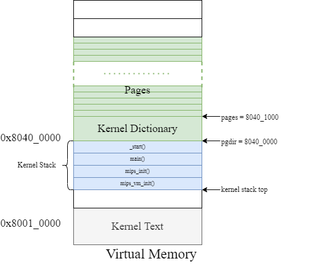
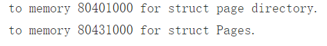
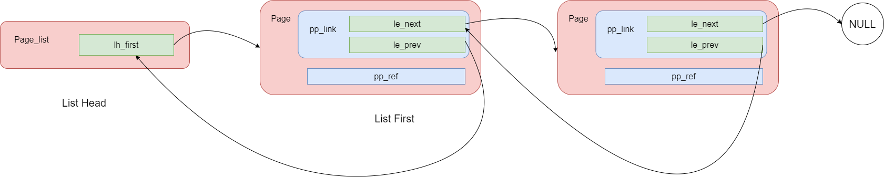
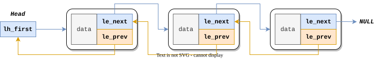
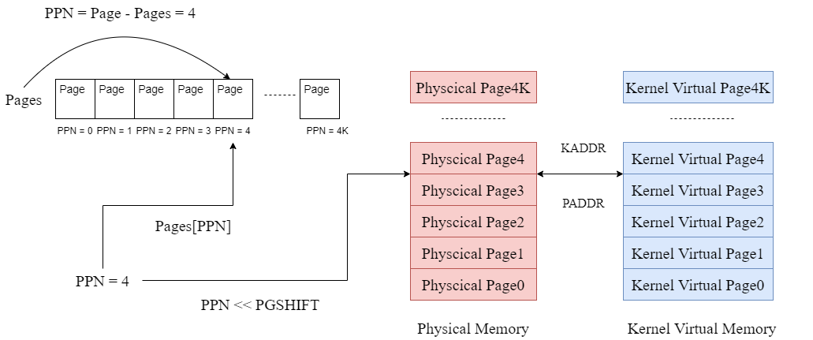
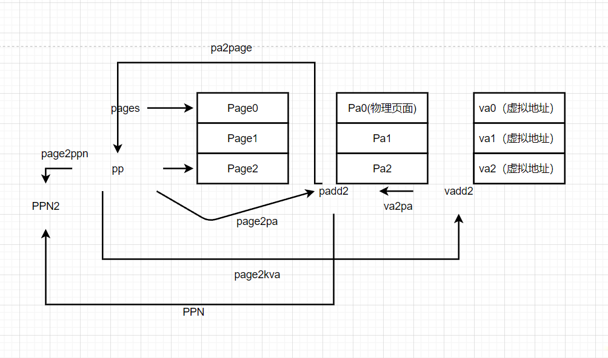
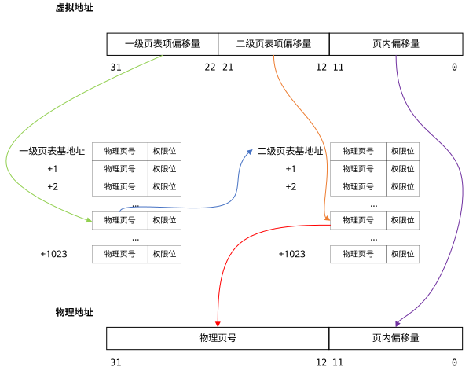
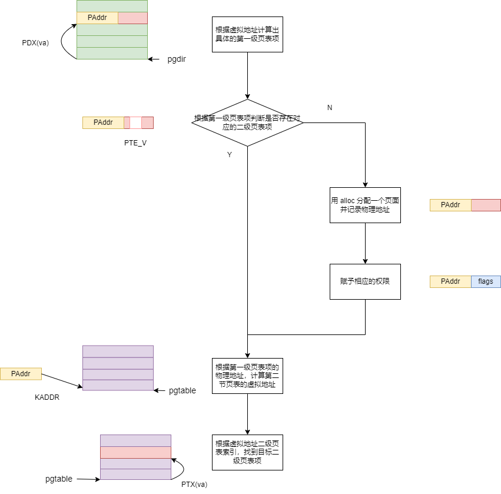
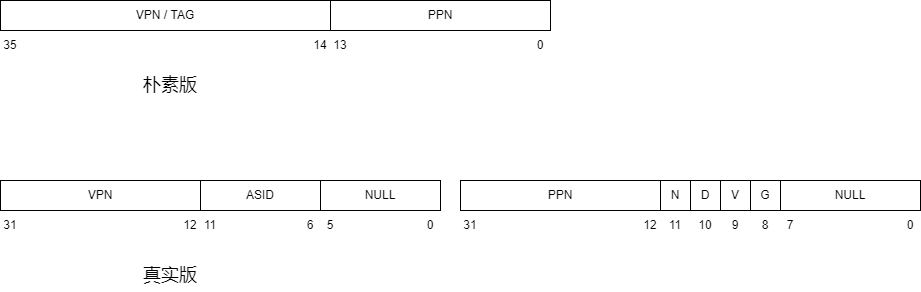
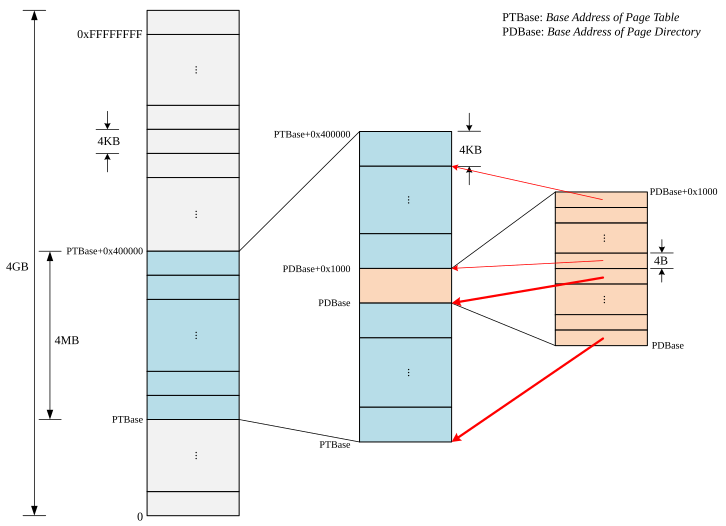

实验目的：
- 了解 MIPS-R3000 的访存流程与内存映射布局
- 掌握与实现物理内存的管理方法（链表法）
- 掌握与实现虚拟内存的管理方法（两级页表）
- 掌握 TLB 清除与重填的流程
Thinking 2.1
指针变量中存储的是虚拟地址，
lw 和sw 中存储的是虚拟地址
虚拟地址到物理地址的映射
在 R3000 上，虚拟地址映射到物理地址，随后使用物理地址来访存。与我们实验相关的映射与寻址规则（内存布局）如下：
- 若虚拟地址处于 0x80000000~0x9fffffff (kseg0)，则将虚拟地址的最高位置 0得到物理地址，通过 cache 访存。这一部分用于存放内核代码与数据结构。
- 若虚拟地址处于 0xa0000000~0xbfffffff (kseg1)，则将虚拟地址的最高 3 位置0 得到物理地址，不通过 cache 访存。这一部分用于映射外设。
- 若虚拟地址处于 0x00000000~0x7fffffff (kuseg)，则需要通过 TLB 来获取物理地址，通过 cache 访存。
所有的在低 2GB 空间的访存操作都需要经过 TLB。
启动流程
从main函数开始，
在main函数中有mips_init()函数
依次调用了五个函数，mips_detect_memory()、mips_vm_init()、page_init()、physical_memory_manage_check()、page_check()
Exercise 2.1
mips_detect_memory():
MOS中的物理内存只有64MB，页的大小为4KB物理内存大小为64MB = $2^{26}B$，故物理地址应有26位 $maxpa = 0x 4000000$
$basemem = 2^{26}, npage = 2^{14}, extmem = 0$
alloc函数：
allocate：分配，alignment：对齐
总的来说，该函数的功能是分配n字节大小的物理空间，并按照变量 align对齐。若clear为置1，则将申请的空间清空。
该函数（分配空间器）仅在设置虚拟内存系统时使用。
1 | static void *alloc(u_int n, u_int align, int clear) |
extern char end[]定义在tools/scse0_3.lds中，虚拟地址为0x80400000，对应的物理地址为0x00400000，故我们可以管理的物理地址区间为[0x00400000, maxpa-1]。freemem作为一个全局变量，初始值为0.第一次调用时，将其赋值为end，freemem的意义为[0x80400000, freemem-1]的虚拟地址已经被分配了。freemem指向kseg0。ROUND(a, n)返回[a/n]n，（中括号代表向上取整）n必须是2的非负整数次幂，这行代码的含义为找到最小的符合条件的*初始虚拟地址，中间未用到的地址空间全部放弃。- 将
alloced_mem设为初始虚拟地址 - 将
freemem增加n，表示这一段都被使用了。PADDR(x)是一个返回虚拟地址x所对应物理地址的宏，它定义在include/mmu.h，这里要求x必须是 kseg0 的虚拟地址，这部分的虚拟地址只需要将二进制下最高位清零就可以得到对应的物理地址。这段代码的含义即检查分配的空间是否超出了最大物理地址，若是则产生报错。 - 如果
clear为真，则使用bzero函数将这一部分清零，bzero函数的实现位于 init/init.c，实现方法类似于bcopy函数。 - 最后将初始虚拟地址返回
mips_vm_init：
总的来说，
- 使用
alloc函数为内核一级页表分配 1 页物理内存，并将boot_pgdir设为对应的初始虚拟地址。 - 使用
alloc函数为物理内存管理所用到的Page结构体按页分配物理内存，设npage个Page结构体的大小为n，一页的大小为m，由上述函数分析可知分配的大小为[n/m]*m同时将分配的空间映射到上述的内核页表中，对应的起始虚拟地址为 UPAGES。 - 为进程管理所用到的 Env 结构体按页分配物理内存，设 NENV 是最大进程数，NENV 个 Env 结构体的大小为 n，一页的大小为 m，由上述函数分析可知分配的大小为[n/m]*m，同时将分配的空间映射到上述的内核页表中，对应的起始虚拟地址为 UENVS
1 | void mips_vm_init() |

最后输出：

注：使用了 boot_map_segment函数，之后会说
1 |
|
1 |
|
LIST_EMPTY(head)，将头部结构体head（指针）对应的链表清空。
1 |
LIST_FIRST(head)，将返回头部结构体head对应的链表的首个元素。
1 |
LIST_INIT(head)是将头部结构体head对应的链表初始化，等价于将首个元素清空
1 |
|
LIST_NEXT(elm, field)，结构体elm包含的名为field的数据，类型是一个链表项LIST_ENTRY(type)， 返回其field（结构体）指向的下一个元素。
1 |
Exercise 2.2


LIST_INSERT_AFTER(listelm, elm, field)，将elm插到已有元素listelm之后。
1 |
|
LIST_INSERT_BEFORE(listelm, elm, field)，将elm插到已有元素listelm之前。
1 | 结构体共有两个指针域，一个指向其后的元素，另一个指向前一个元素的le_next指针 |
1 | LIST_NEXT((elm), field)返回:elm的le_next的值 |
LIST_INSERT_HEAD(head, elm, field)，将elm插到头部结构体head对应链表的头部。
1 |
|
LIST_INSERT_TAIL(head, elm, field)，将elm插到头部结构体head对应链表的尾部。
1 |
|
debug:
如果head直接为NULL，则应将..
1 | if (q == NULL) { |
q不能为NULL
1 | while (q->le_next != NULL) { |
LIST_REMOVE(elm, field)，将elm从对应链表中删除。
1 |
|
内存控制块
MOS 中 维护 npage 个内存控制块，也就是 Page 结构体。每一个内存控制块对应一页的物理内存，用这个结构体来管理这块内存的分配。
npage 个 Page 和 npage 个物理页面一一顺序对应，具体来说，npage 个 Page 的起始地址为 pages，则 pages[i] 对应从 0 开始计数的第 i 个物理页面。两者的转换可以使用 include/pmap.h 中的 page2pa 和 pa2page 这两个函数。
将这些结构体全部插入一个链表中，这个链表被称为空闲链表，它对应 page_free_list。
当一个进程需要被分配内存时，将链表头部的内存控制块对应的那一页物理内存分配出去，同时将该内存控制块从空闲链表的头部删去。
当一页物理内存被使用完毕 (准确来说，引用次数为 0 时)，将其对应的内存控制块重新插入到空闲链表的头部。
Page结构体：
- Page_LIST_entry_t 定义为LIST_ENTRY(Page)，因此 pp_link 即为对应的链表项(field)。
pp_ref对应这一页物理内存被引用的次数，它等于有多少虚拟页映射到该物理页。
struct Page_list为HEAD结构体，对应LIST_HEAD。pp_link对应field，Page的定义在include/pmap.h中
1 | struct Page_list{ |
相关函数
Exercise 2.3
page_init():
作用：
- 将链表相关宏初始化
- 将mips_vm_init()中用到的空间对应的物理页面的内存控制块的引用次数全部标为1
- 最后将剩下的物理页面的引用次数全部标为0，并将它们的内存控制块插入page_free_list
1 | static struct Page_list page_free_list; /* Free list of physical pages */ |
观察到page_free_list为Page_list类型的元素，故调用时如下：(&page_free_list对应head指针)
1 | LIST_INIT(&page_free_list); |
将”freemem”与BY2PG的倍数对齐，调用ROUND函数
1 | freemem = ROUND(freemem, BY2PG); |
将 freemem 以下页面对应的结构体中的 pp_ref 标为 1。
如何寻找freemem以下的页面？如何寻找与之对应的结构体？
答：


freemem本质上是虚拟地址，而每一个物理页面都对应有一个Page结构体，共有npages个结构体，其起始地址为pages。由pages地址求对应物理页面的虚拟地址使用 page2kva.
1 | Struct Page *p; |
如何找到其他剩余的：
1 | for (p = pa2page(PADDR(freemem)); page2ppn(p) < npage; p++) { |
其他方法：
1 | int size = PPN(PADDR(freemem)); |
1 | for (; i < npage; i++) { |
Exercise 2.4
page_alloc():
观察到pp为指向 指向Page结构体的指针。
作用：将page_free_list空闲链表头部内存控制块对应的物理页面分配出去，将其从空闲链表中移除，并清空对应的物理页面，最后将 pp 指向的空间赋值为这个内存控制块的地址。
1 | int page_alloc(struct Page **pp) |
page_decref():
作用是令 pp 对应内存控制块的引用次数减少 1，如果引用次数为 0 则会调用下面的 page_free 函数将对应物理页面重新设置为空闲页面。
Exercise 2.5
page_free():
作用是判断 pp 指向内存控制块对应的物理页面引用次数是否为 0，若是则该物理页面为空闲页面，将其对应的内存控制块重新插入到 page_free_list。
1 | void page_free(struct Page *pp) |
虚拟内存管理
两级页表结构
MOS中采用 PADDR和 KADDR这两个宏对位于kseg0的va和pa进行转换。
对于位于kuseg的虚拟地址，MOS采用两级页表结构对其进行管理
第一级表称为页目录 (Page Directory)，第二级表称为页表 (Page Table)。为避免歧义，下面用 一级页表 指代 Page Directory，二级页表 指代 Page Table。
include/mmu.h 中提供了两个宏以快速获取偏移量， PDX(va) 可以获取虚拟地址 va 的 31-22 位， PTX(va) 可以获取虚拟地址 va 的 21-12 位。
访存时，先通过一级页表基地址(pgdir)和一级页表项的偏移量，找到对应的一级页表项（指向该表项的指针），得到对应的二级页表基地址的物理页号（根据指针访存），（将所得的物理地址转化为虚拟地址，并强制类型转换为 Pte*）再根据二级页表项的偏移量找到所需的二级页表项（指向该表项的指针），进而得到对应物理页的物理页号（根据指针访存）。

CPU 发出的地址均为虚拟地址，因此获取相关物理地址后，需要转换为虚拟地址再访问。对页表进行操作时处于内核态，因此使用宏 KADDR 即可。
存储上，无论是一级页表还是二级页表，它们的结构都是一样的，只不过每个页表项记录的物理页号含义有所不同。每个页表均由 1024 个页表项组成，每个页表项由 32 位组成，包括 20 位物理页号以及 12 位标志位。关于标志位的相关定义，其实前面已经提到过了，因为每个页表项最后都会填入 TLB 中，因此它的规范和 EntryLo 寄存器的规范相同。 每个页表所占的空间为 4KB，恰好为一个物理页面的大小。
可以发现，一个页表项可以恰好由一个 32 位整型来表示，因此 我们使用 Pde 来表示一个一级页表项，用 Pte 来表示一个二级页表项，这两者的本质都是 u_long，它们对应的 typedef 位于 include/mmu.h。
1 | typedef u_long Pde; |
例如，pgdir 是一个 Pde 类型的指针，表示一个一级页表的基地址，那么使用 pgdir + i 即可得到偏移量为 i 的页表项地址。(pgdir在前面出现过)
使用 tlb_invalidate 函数可以实现删除特定虚拟地址的映射，每当页表被修改，就需要调用该函数以保证下次访问该虚拟地址时诱发 TLB 重填以保证访存的正确性。
一般的操作系统中，当物理页框全部被映射，此时有新的虚拟页框需要映射到物理页框，那么就需要将一些物理页框 置换到硬盘中，选择哪个物理页框的算法就称为页面置换算法，例如我们熟悉的 FIFO 算法和 LRU 算法。
然而在我们的 MOS 中，对这一过程进行了简化，一旦物理页框全部被分配，进行新的映射时并不会进行任何的页面置换，而是直接返回错误，这对应 page_alloc 函数中返回的 -E_NO_MEM。
系统启动的相关函数
- 以 boot 为前缀的函数名表示该函数是在系统启动、初始化时调用的。
- 不以 boot 为前缀的函数名表示该函数是在进程的生命周期中被调用的，用于操作进程的页表
启动时的二级页表检索函数 boot_pgdir_walk():
给定一级页表的基址，给定目标虚拟地址，返回对应的 指向二级页表项的 指针。（没有可创建）

Exercise2.6
返回一级页表基地址 pgdir 对应的两级页表结构中，va 这个虚拟地址所在的二级页表项。如果 create 不为 0 且对应的二级页表不存在，则会使用 alloc 函数分配一页物理内存用于存放
1 | use `alloc` to allocate a page for the page table |
1 | static Pte *boot_pgdir_walk(Pde *pgdir, u_long va, int create) |
1 | Pte *pdtable_entry = (Pte *)(KADDR(PTE_ADDR(*pgdir_entry))) + PTX(va); |
启动时区间地址映射函数 —boot_map_segment
将虚拟地址空间映射到物理地址空间。
给定一级页表基址，给定虚拟地址空间起始位置，给定映射的地址空间的大小（页面大小的整数倍），给定物理地址空间起始位置，给定权限位
Exercise2.7
作用是将一级页表基地址 pgdir 对应的两级页表结构做区间地址映射，将虚拟地址区间 [va, va + size − 1] 映射到物理地址区间 [pa, pa + size − 1]，因为是按页映射，要求 size 必须是页面大小的整数倍。同时为相关页表项的权限位设置为 perm。这个函数调用了 boot_pgdir_walk，它也是在内核启动过程中使用的，前面我们提到过它为 Page 结构体和 Env 结构体进行了映射。
1 | void boot_map_segment(Pde *pgdir, u_long va, u_long size, u_long pa, int perm) |
运行时的二级页表检索函数—pgdir_walk
给定一级页表的起始位置，给定目标虚拟地址，将对应二级页表项的地址 放到 ppte所指的空间上
这个函数是 boot_pgdir_walk 的非启动版本
Exercise 2.8
1 | int pgdir_walk(Pde *pgdir, u_long va, int create, Pte **ppte) |
增加地址映射函数—page_insert
给定一级页表的基址，给定目标虚拟地址，给定指向内存控制块的指针pp，将虚拟地址映射到pp对应的 物理页面，并设置权限位。
这个函数的作用是将一级页表基地址 pgdir 对应的两级页表结构中 va 这一虚拟地址映射到内存控制块 pp 对应的物理页面，并将页表项权限为设置为 perm。
Exercise 2.9
1 | int page_insert(Pde *pgdir, struct Page *pp, u_long va, u_int perm) |
寻找映射的物理地址函数—page_lookup
它的作用是返回一级页表基地址 pgdir 对应的两级页表结构中 va 这一虚拟地址映射对应的物理页面对应的内存控制块，同时将 ppte 指向的空间设为对应的二级页表项地址。
取消地址映射函数—page_remove
它的作用是删除一级页表基地址 pgdir 对应的两级页表结构中 va 这一虚拟地址对物理地址的映射，如果存在这样的映射，那么对应物理页面的引用次数会减少。
被动地址映射函数
void pageout(int va, int context)
一级页表基地址 context 对应的两级页表结构中 va 新增这一虚拟地址的映射，对应的物理页面通过函数 page_alloc 获取而不特殊指定，这对应其「被动」的性质。该函数的具体调用流程将在下一部分进行介绍。
访存与TLB重填

TLB相关的前置知识
- 内存管理相关的CP0寄存器：
| 寄存器序号 | 寄存器名 | 用途 |
|---|---|---|
| 8 | BadVaddr | 保存引发地址异常的虚拟地址 |
| 10、2 | EntryHi、EntryLo | Hi记录了TLB的高32位，Lo记录了TLB的低32位，所有读写 TLB 的操作都要通过这两个寄存器 |
| 0 | Index | 决定索引号为某个值的 tlb 表项被读或者写 |
| 1 | Random | 提供一个随机的索引号用于 tlb 的读写 |
- TLB的硬件结构：
每一个 TLB 表项都有 64 位，其中高 32 位是 Key，低 32 位是 Data。
EntryHi、EntryLo
EntryHi、EntryLo 都是 CP0 中的寄存器，他们只是分别对应到 TLB 的 Key 与Data，并不是 TLB 本身。
EntryHi、EntryLo 的位结构如下：
Key（EntryHi）
VPN：Virtual Page Number
- 当 TLB 缺失（CPU 发出虚拟地址，欲在 TLB 中查找物理地址但未查到）时，EntryHi 中的 VPN 自动（由硬件）填充为对应虚拟地址的虚页号。
- 当需要填充或检索 TLB 表项时，软件需要将 VPN 段填充为对应的虚拟地址
ASID：Address Space IDentifier
- 用于区分不同的地址空间。查找 TLB 表项时，除了需要提供 VPN，还需要提供 ASID（同一虚拟地址在不同的地址空间中通常映射到不同的物理地址）。
Data（EntryLo）：
PFN：Physical Frame Number
- 软件通过填写 PFN，随后使用 TLB 写指令，才将此时的 Key 与 Data写入 TLB 中。
N：Non-cachable。当该位置高时，后续的物理地址访存将不通过 cache。
- D：Dirty。事实上是可写位。当该位置高时，该地址可写；否则任何写操作都将引发 TLB 异常。
- V：Valid。如果该位为低，则任何访问该地址的操作都将引发 TLB 异常。
- G：Global。
TLB 事实上构建了一个映射 < VPN, ASID >→< PFN, N, D, V, G >。
MIPS中TLB相关指令
| 指令 | 作用 |
|---|---|
| tlbr | 以 Index 寄存器中的值为索引,读出 TLB 中对应的表项到 EntryHi 与 EntryLo。 |
| tlbwi | 以 Index 寄存器中的值为索引,将此时 EntryHi 与 EntryLo 的值写到索引指定的 TLB 表项中。 |
| tlbwr | 将 EntryHi 与 EntryLo 的数据随机写到一个 TLB 表项中（此处使用 Random 寄存器来“随机”指定表项，Random 寄存器本质上是一个不停运行的循环计数器） |
| tlbp | tlb probe。用于查看 tlb 是否可以转换虚拟地址（即命中与否）根据 EntryHi 中的 Key（包含 VPN 与 ASID），查找 TLB 中与之对应的表项。如果命中，并将表项的索引存入 Index 寄存器。若未找到匹配项，则 Index 最高位被置 1。 |
- tlbr：以 Index 寄存器中的值为索引,读出 TLB 中对应的表项到 EntryHi 与 EntryLo。
- tlbwi：以 Index 寄存器中的值为索引,将此时 EntryHi 与 EntryLo 的值写到索引指定的 TLB 表项中。
- tlbwr：将 EntryHi 与 EntryLo 的数据随机写到一个 TLB 表项中（此处使用 Random 寄存器来“随机”指定表项，Random 寄存器本质上是一个不停运行的循环计数器）。
- tlbp：根据 EntryHi 中的 Key（包含 VPN 与 ASID），查找 TLB 中与之对应的表项，并将表项的索引存入 Index 寄存器（若未找到匹配项，则 Index 最高位被置 1）。
内核软件操作TLB的流程：1.填写CP0寄存器；2.使用TLB相关指令
用户态下访存受限，我理解的是不能访问kseg1（用于访问外设）和kseg2（仅内核使用），也不可以访问kseg0。
在用户空间访问时，虚拟地址到物理地址的转化均通过TLB进行
TLB重填流程
TLB重填发生在CPU发出虚拟地址，想要在TLB中查找，但没有找到，之后程序会将对应的物理地址重填入TLB
1.确定此时的一级页表基地址：mCONTEXT中存储了当前进程一级页表基地址位于 kseg0 的虚拟地址 方便确定一级页表的物理地址
2.从 BadVaddr 中取出引发 TLB 缺失的虚拟地址, 并确定其对应的一级页表偏移量（高 10 位）
3.根据一级页表偏移量, 从一级页表中取出对应的表项：此时取出的表项由二级页表基地址的物理地址与权限位组成；
4.判定权限位: 若权限位显示该表项无效（无 PTE_V ）, 则调用 page_out ，随后回到第一步
5.确定引发 TLB 缺失的虚拟地址对应的二级页表偏移量（中间 10 位），与先前取得的二级页表基地址的物理地址共同确认二级页表项的物理地址
6.将二级页表项物理地址转为位于 kseg0 的虚拟地址（高位补 1），随后页表中取出对应的表项：此时取出的表项由物理地址与权限位组成；
7.判定权限位: 若权限位显示该表项无效（无 PTE_V），则调用 page_out ，随后回到第一步；（PTE_COW 为写时复制权限位，将在 lab4 中用到，此时将所有页表项该位视为 0 即可）
8.将物理地址存入 EntryLo , 并调用 tlbwr 将此时的 EntryHi 与 EntryLo 写入到 TLB 中（EntryHi 中保留了虚拟地址相关信息）。
1 | NESTED(do_refill,0 , sp) |
多级页表与页目录自映射
而在 MOS 中，页表和页目录都在进程的地址空间中得到映射，这意味着在 1024 个页表中，有一个页表所对应的4MB空间就是这个1024个页表占用的4MB空间。这一个特殊的页表就是页目录，它的 1024 个表项映射到这 1024 个页表。因此只需要 4MB 的空间即可容纳页表和页目录。
而 MOS 中，将页表和页目录映射到了用户空间中的 0x7fc00000-0x80000000（共4MB）区域，这意味着 MOS 中允许在用户态下访问当前进程的页表和页目录，这一特性将在后续的 Lab 中用到。

据页目录自映射的性质，求出 MOS 中页目录的基地址：
一个页表的大小为4KB，有1024个页表项，每个页表项为 4B，
共有1KB个页表，故总页表占4MB,共1MB个页表项。
我们知道，1MB个页表项和4GB的地址空间线性映射（每4KB的地址空间对应一个页表项），故上述 0x7fc00000对应的应该是 第 0x7fc00000 >> 12 个页表项；
该页表项映射的是整个页表的起始地址，符合页目录第一个页表项的性质，即该页表项实质上就是页目录的第一个页表项
又页表基址为 0x7fc00000，页表项的大小为4B，故 该页表项相对于页表基址的偏移为0x7fc00000 >> 12 << 2；
可求出该页表项的地址为 0x7fc00000 + 0x7fc00000 >> 10 = 0x7fdff000。即为页目录的基址。
(0x7fdff000 - 0x7fc00000) >> 12 << 2 + 0x7fdff000 = 0x7fdff7fc
页目录内的1024个页表项，分别对应1024个页表，其中有一个页目录项对应页目录本身。
页目录基址为 0x7fdff000，页表基址为0x7fc00000，是第 (0x7fdff000 - 0x7fc00000) >> 12 个页表，故对应页目录的页表项的偏移应为 (0x7fdff000 - 0x7fc00000) >> 12 << 2
总结
lab2还是相当重要的，课上上机的两次extra我侥幸都做出来了，但要说真正领会其中的所有要领，还差得很远，需要继续努力。
This is copyright.